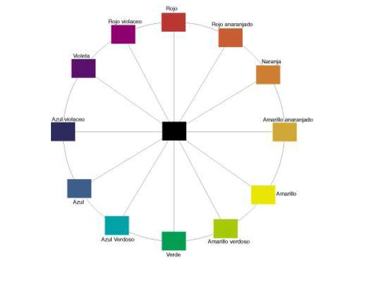
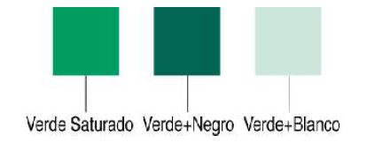

c/Calpissa, 19 - 12580 - Benicarló (Castellón - España) https://www.netdisseny.com
Le construimos su página web GRATIS, infórmese pulsando aquí
c/Calpissa, 19 - 12580 - Benicarló (Castellón - España) https://www.netdisseny.com
Empezaremos diciendo que el color en sí no existe, no es una característica del objeto, es más bien una apreciación subjetiva nuestra. Por tanto, podemos definirlo como, una sensación que se produce en respuesta a la estimulación del ojo y de sus mecanismos nerviosos, por la energía luminosa de ciertas longitudes de onda.
El color es pues un hecho de la visión que resulta de las diferencias de percepciones del ojo a distintas longitudes de onda que componen lo que se denomina el "espectro" de luz blanca reflejada en una hoja de papel. Estas ondas visibles son aquellas cuya longitud de onda está comprendida entre los 400 y los 700 nanómetros; más allá de estos límites siguen existiendo radiaciones, pero ya no son percibidos por nuestra vista.
Lo que ocurre cuando percibimos un objeto de un determinado color, es que la superficie de ese objeto refleja una parte del espectro de luz blanca que recibe y absorbe las demás. La luz blanca está formada por tres colores básicos: rojo intenso, verde y azul violeta. Por ejemplo, en el caso de objeto de color rojo, éste absorbe el verde y el azul, y refleja el resto de la luz que es interpretado por nuestra retina como color rojo. Este fenómeno fue descubierto en 1666 por Isaac Newton, que observó que cuando un haz de luz blanca traspasaba un prisma de cristal, dicho haz se dividía en un espectro de colores idéntico al del arco iris: rojo, anaranjado, amarillo, verde, azul, añil y violeta.
En las artes gráficas tenemos dos grandes categorías con respecto al color, imagen en color e imagen en blanco y negro, en éstas últimas podemos diferenciar: - imágenes a pluma. - imágenes tramadas: mediante diferentes tipos de gris. Asimismo, las imágenes en color se pueden dividir en dos categorías: - colores planos: manchas uniformes de color. - degradados, también tramadas. El color es un elemento básico a la hora de elaborar un mensaje visual. Muchas veces, el color no es un simple atributo que recubre la forma de las cosas en busca de la fidelidad reproducida. A pesar de que, sin el color la forma permanece, con frecuencia el Mensajes es, precisamente, el Color, o lo que sólo puede expresarse por el Color
Más allá de la mera identificación o asociación, el color también se puede emplear para crear experiencias. El publicista representa el producto en su anunc io mediante la forma, pero añade las cualidades del color. El color puede llegar a ser la traducción visual de nuestros sentidos, o despertar éstos mediante la gama de colores utilizados. Podremos dar sensación de frío, de apetecible, de rugoso, de limpio...
El color está presente en todos los aspectos de la identidad empresarial y de marca. En la identidad, las empresas pueden hacer que el color sea el principal elemento de su identidad utilizando un único color o una paleta de colores como parte de su identidad visual. Si el color se emplea uniformemente en una serie de elementos de la identidad, se termina convirtiendo en la rúbrica de la empresa.
Aprender a ver el color y obtener una interpretación de sus propiedades inherentes ha de ser el punto de partida si deseamos realizar un tratamiento eficaz de éste en las distintas aplicaciones gráficas que hagamos. Podemos establecer diversas clasificaciones de color. Por ejemplo esta clasificación de "Grafismo Funcional" (Abraham Moles/ Luc Janiszewski):
c/Calpissa, 19 - 12580 - Benicarló (Castellón - España) https://www.netdisseny.com
El ojo humano puede distinguir entre 10.000 colores. Se pueden además emplear tres dimensiones físicas del color para relacionar experiencias de percepción con propiedades materiales: saturación, brillantez y tono.
El círculo cromático:Nos sirve para observar la organización básica y la interrelación de los colores. También lo podemos emplear como forma para hacer la selección de color que nos parezca adecuada a nues tro diseño. Podemos encontrar diversos círculos de color, pero el que aquí vemos está compuesto de 12 colores básicos.
c/Calpissa, 19 - 12580 - Benicarló (Castellón - España) https://www.netdisseny.com
Dentro encontramos el negro, que se produce gracias a la mezcla de todos ellos. En este círculo cromático podemos encontrar:
c/Calpissa, 19 - 12580 - Benicarló (Castellón - España) https://www.netdisseny.com
Los tonos secundarios se obtienen al mezclar partes iguales de dos primarios; los tonos terciarios se consiguen al mezclar partes iguales de un tono primario y de un secundario adyacente. Los primarios son colores que se consideran absolutos y que no pueden crearse mediante la mezcla de otros colores. Sin embargo, mezclar los primarios en diversas combinaciones crea un número infinito de colores. Dependiendo de qué ámbito, podemos encontrar tres juegos de colores primarios:
El tono:Es el matiz del color, es decir el color en sí mismo, supone su cualidad cromática, es - simplemente- un sinónimo de color. Es la cualidad que define la mezcla de un color con blanco y negro. Está relacionado con la longitud de onda de su radiación. Según su tonalidad se puede decir que un color es rojo, amarillo, verde... Aquí podemos hacer una división entre:
tonos cálidos (rojo, amarillo y anaranjados). Aquellos que asociamos con la luz solar, el fuego... y tonos fríos (azul y verde). Los colores fríos son aquellos que asociamos con el agua, la luz de la luna ...
Los términos "cálido" y "frío" se utilizan para calificar a aquellos tonos que connotan dichas cualidades; éstos términos se designan por lo que denominamos "temperatura de color". Las diferencias entre los colores cálidos y los fríos pueden ser muy sutiles. Por ejemplo, el papel blanco puede parecer más cálido o más frío por una leve presencia de rojo o azul. Lo mismo ocurre con el gris y el negro.
La brillantez:Tiene que ver con la intensidad o el nivel de energía. Es la luminosidad de un color (la capacidad de reflejar el blanco), es decir, el brillo. Alude a la claridad u oscuridad de un tono. Es una condición variable, que puede alterar fundamentalmente la apariencia de un color. La luminosidad puede variar añadiendo negro o blanco a un tono.
En general, con los tonos puros que tienen un valor más luminoso (amaril lo, naranja, verde) se consiguen las mejores variantes claras, mientras que los tonos puros que tienen normalmente un valor normalmente menos luminoso (rojo, azul, violeta) ofrecen las mejores variantes oscuras.
La saturación:: Está relacionada con la pureza cromática o falta de di lución con el blanco. Constituye la pureza del color respecto al gris, y depende de la cantidad de blanco presente. Cuanto más saturado está un color, más puro es y menos mezcla de gris posee.
c/Calpissa, 19 - 12580 - Benicarló (Castellón - España) https://www.netdisseny.com